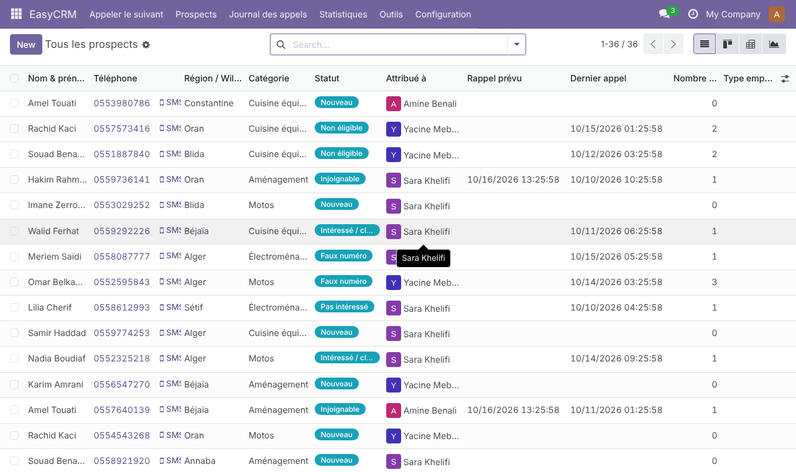
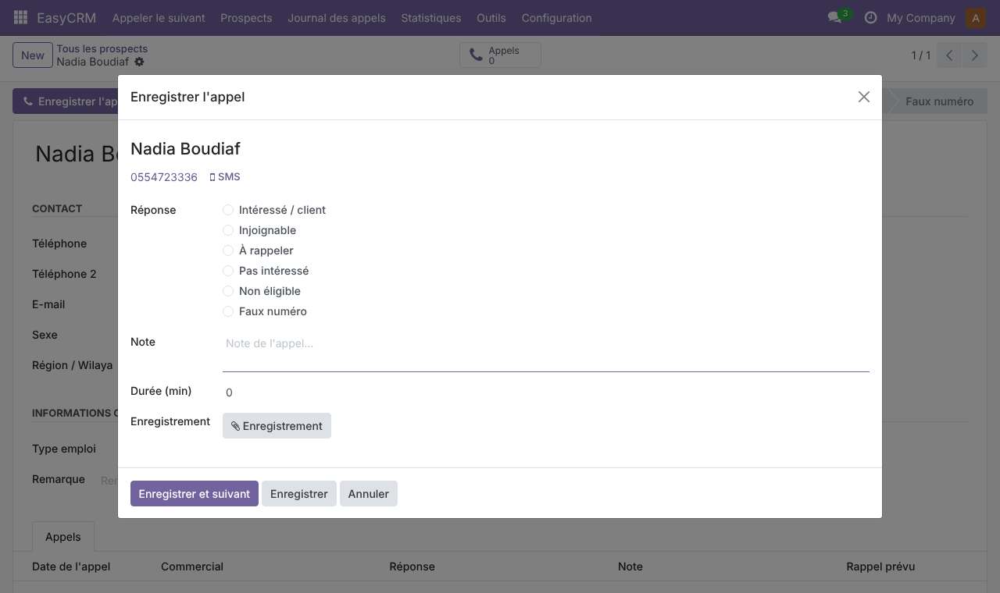
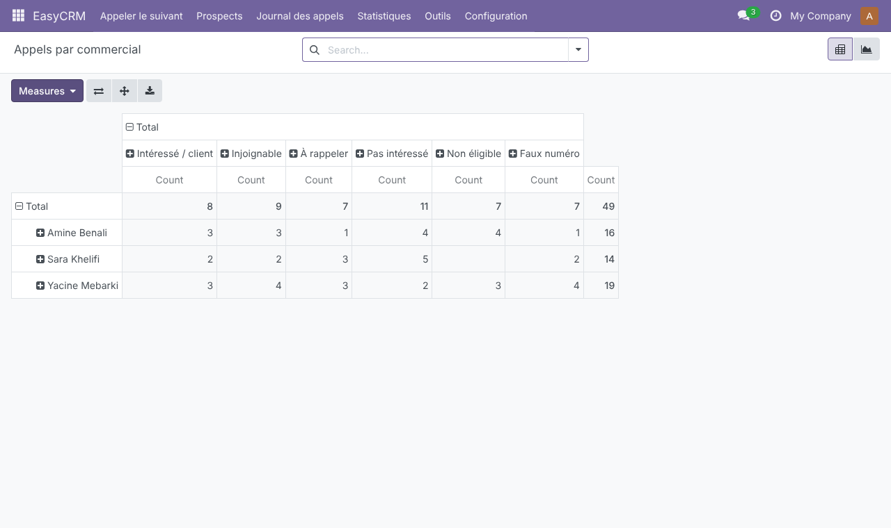
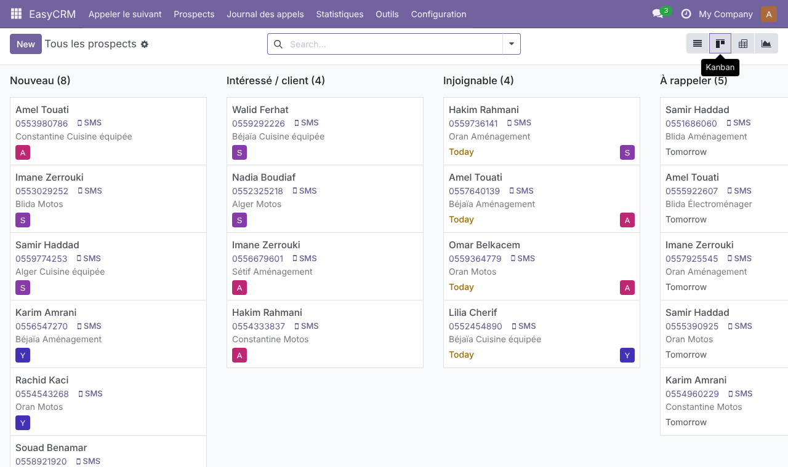
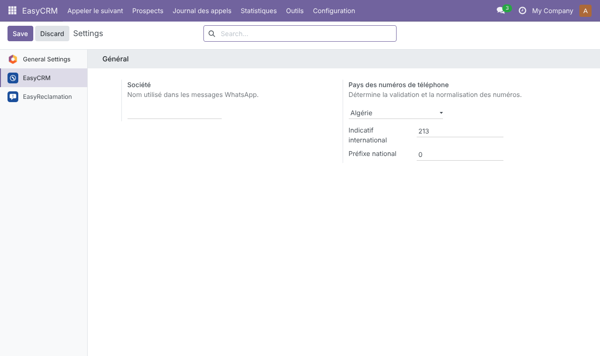

Compatible with Odoo 18.0 — Community and Enterprise. Standalone: depends only on base and mail. Does not modify Odoo's CRM app.

Prospect list with statuses and salespeople

Logging a call

Calls by salesperson and outcome

Kanban by status

Settings: country and phone format
Install the module from the Apps menu, then assign the EasyCRM roles to your users in Settings → Users. The user interface is in French.